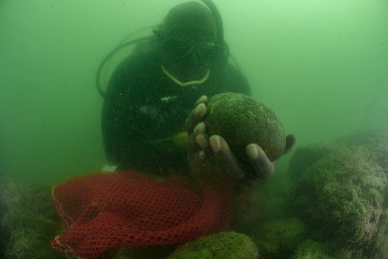

MAGAZINE
A Diver's hunt for lost slave ships led to an incredible jour...
Into the Depths: A 6-part series featuring Nat Geo Explorer Tara Roberts
Read
First dinosaur found wih a respirotary disease
Read
Today's picks
Animals
Most U.S eagles suffer from lead poisining, study suggests